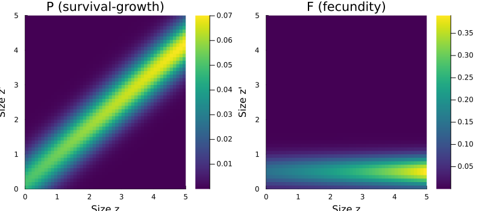

Introduction to Categorical Projection Models
Simon Frost
Overview
CategoricalPopulationDynamics.jl provides a category-theoretic framework for constructing, composing, and transforming structured population models. It sits above IntegralProjectionModels.jl (IPMs) and MatrixProjectionModels.jl (MPMs), providing:
- Abstract model specification via ACSet schemas (projection nets)
- Kan extension functors to move between continuous kernels (IPMs) and discrete matrices (MPMs)
- Compositional construction via undirected wiring diagrams (UWDs)
- Spatial extension via stratification and resolution change via coarsening
- Lowering/lifting to concrete IPMProblem or MatrixProjectionModel objects
The mathematical foundation is the adjunction chain $\text{Lan}_D \dashv D^* \dashv \text{Ran}_D$ between the category of continuous kernels and the category of discrete matrices, verified by Lean 4 proofs.
This introductory vignette demonstrates the core abstractions using a simple perennial plant model.
Setup
using CategoricalPopulationDynamics
using Catlab
using Catlab.CategoricalAlgebra
using Catlab.WiringDiagrams
using Catlab.Programs: @relation
using LinearAlgebra
using StructuredPopulationCore: lambda
using PlotsProjection Nets: Abstract Model Specification
A projection net is an ACSet (attributed C-set) — a labelled bipartite graph connecting states (population variables) to transitions (demographic processes). This follows the pattern of AlgebraicPetri.jl but with additive composition semantics (kernels/matrices sum) rather than multiplicative (mass-action).
A Simple One-State Model
Consider a perennial plant with a single continuous state variable (body size) and two demographic processes: survival/growth and fecundity.
net = LabelledProjectionNet([:size],
:survive_grow => (:size => :size),
:reproduce => (:size => :size))
println("States: ", sname(net))
println("Transitions: ", tname(net))
println("n_states: ", n_states(net))
println("n_transitions: ", n_transitions(net))States: [:size]
Transitions: [:survive_grow, :reproduce]
n_states: 1
n_transitions: 2The projection net captures the structure of the model — which processes connect which states — without specifying any numerical details (vital rates, kernel shapes, or matrix entries).
A Two-State Model
A juvenile-adult life cycle with three demographic processes:
net2 = LabelledProjectionNet([:juvenile, :adult],
:growth => (:juvenile => :adult),
:survival => (:adult => :adult),
:reproduction => (:adult => :juvenile))
println("States: ", sname(net2))
println("Transitions: ", tname(net2))
for t in 1:n_transitions(net2)
src = sources(net2, t)
tgt = targets(net2, t)
println(" ", tname(net2, t), ": state ", src, " → state ", tgt)
endStates: [:juvenile, :adult]
Transitions: [:growth, :survival, :reproduction]
growth: state [1] → state [2]
survival: state [2] → state [2]
reproduction: state [2] → state [1]Domains: Discretisation Specification
Domains specify how continuous state variables are discretised. A ContinuousProjectionDomain defines the bounds and mesh resolution for the midpoint rule.
domain = ContinuousProjectionDomain(0.0, 5.0, 50)
println("Bounds: [", domain.lower, ", ", domain.upper, "]")
println("Mesh points: ", n_meshpoints(domain))
println("Step size h: ", step_size(domain))
println("First 5 midpoints: ", round.(meshpoints(domain)[1:5], digits=3))Bounds: [0.0, 5.0]
Mesh points: 50
Step size h: 0.1
First 5 midpoints: [0.05, 0.15, 0.25, 0.35, 0.45]For discrete state variables (e.g., seed bank, reproductive status):
disc_domain = DiscreteProjectionDomain([:dormant, :active])
println("Discrete domain: ", disc_domain.labels, " (", n_meshpoints(disc_domain), " classes)")Discrete domain: [:dormant, :active] (2 classes)Vital Rate Functions
Now we attach biological meaning to the abstract transitions. Define vital rate functions for our perennial plant:
# Survival probability (logistic function of size)
s(z) = 1.0 / (1.0 + exp(-(0.5 + 0.3 * z)))
# Growth kernel (Gaussian, conditional on survival)
g(z_new, z) = exp(-0.5 * ((z_new - (0.2 + 0.8 * z)) / 0.5)^2) / (0.5 * sqrt(2π))
# Fecundity rate (exponential function of size)
f_rate(z) = exp(0.1 + 0.2 * z)
# Recruit size distribution (Gaussian)
recruit_dist(z_new) = exp(-0.5 * ((z_new - 0.5) / 0.3)^2) / (0.3 * sqrt(2π))
# Sub-kernels: the biological building blocks
P_kernel(z_new, z) = s(z) * g(z_new, z) # survival-growth
F_kernel(z_new, z) = f_rate(z) * recruit_dist(z_new) # fecundityF_kernel (generic function with 1 method)Left Kan Extension: Kernel → Matrix
The left Kan extension $\text{Lan}_D$ is the fundamental discretisation functor. It converts a continuous kernel $K(z', z)$ into a matrix $\mathbf{A}$ using the midpoint rule:
\[A_{ij} = h \cdot K(z_i, z_j)\]
where $h$ is the bin width and $z_i$ are the midpoints.
A_P = left_kan_extension(P_kernel, domain)
A_F = left_kan_extension(F_kernel, domain)
A_full = A_P + A_F
println("Survival-growth matrix: ", size(A_P))
println("Fecundity matrix: ", size(A_F))
println("λ(P) = ", round(lambda(A_P), digits=4), " (survival only)")
println("λ(A) = ", round(lambda(A_full), digits=4), " (full model)")Survival-growth matrix: (50, 50)
Fecundity matrix: (50, 50)
λ(P) = 0.6929 (survival only)
λ(A) = 1.7923 (full model)z = meshpoints(domain)
p1 = heatmap(z, z, A_P, title="P (survival-growth)",
xlabel="Size z", ylabel="Size z'", color=:viridis)
p2 = heatmap(z, z, A_F, title="F (fecundity)",
xlabel="Size z", ylabel="Size z'", color=:viridis)
plot(p1, p2, layout=(1, 2), size=(800, 350))
Right Kan Extension: Matrix → Kernel
The right Kan extension $\text{Ran}_D$ goes the other direction — from a matrix back to a piecewise-constant kernel:
\[K_{pw}(z', z) = \frac{A_{ij}}{h} \quad \text{where } z \in B_j,\; z' \in B_i\]
K_pw = right_kan_extension(A_P, domain)
# The piecewise kernel reconstructs the matrix at midpoints
h = step_size(domain)
println("K_pw(z₁, z₁) = ", round(K_pw(z[1], z[1]), digits=6))
println("A[1,1] / h = ", round(A_P[1, 1] / h, digits=6))
println("Match: ", K_pw(z[1], z[1]) ≈ A_P[1, 1] / h)K_pw(z₁, z₁) = 0.464668
A[1,1] / h = 0.464668
Match: trueAdjunction Round-Trip
The unit of the adjunction $\eta: \text{Id} \Rightarrow \text{Lan}_D \circ \text{Ran}_D$ should be the identity — discretising a piecewise-constant kernel recovers the original matrix exactly:
A_roundtrip = left_kan_extension(K_pw, domain)
println("Round-trip error ‖A' - A‖/‖A‖ = ", round(norm(A_roundtrip - A_P) / norm(A_P), digits=15))Round-trip error ‖A' - A‖/‖A‖ = 0.0Additive Composition
The fundamental composition operation for projection models is additive: the full projection kernel is the sum of sub-kernels.
Catlab-Free Composition
The simplest approach — directly sum discretised sub-matrices:
A_composed = compose_transitions(Dict(:P => A_P, :F => A_F))
println("λ(composed) = ", round(lambda(A_composed), digits=6))
println("λ(direct) = ", round(lambda(A_full), digits=6))
println("Match: ", lambda(A_composed) ≈ lambda(A_full))λ(composed) = 1.79232
λ(direct) = 1.79232
Match: trueComposition via Undirected Wiring Diagram
For more complex models, we specify the composition pattern as a UWD using Catlab’s @relation macro:
uwd = @relation (z, z_new) begin
survive_grow(z, z_new)
reproduce(z, z_new)
end
# Compose using ProjectionSharers
ps_P = ProjectionSharer(A_P)
ps_F = ProjectionSharer(A_F)
result = oapply(uwd, [ps_P, ps_F])
println("Composed matrix size: ", size(result.matrix))
println("λ(oapply) = ", round(lambda(result.matrix), digits=6))Composed matrix size: (50, 50)
λ(oapply) = 1.79232Dictionary-Based Composition
We can also look up sharers by name from the UWD:
sharers = Dict(
:survive_grow => ProjectionSharer(A_P),
:reproduce => ProjectionSharer(A_F))
result_dict = oapply(uwd, sharers)
println("λ(dict) = ", round(lambda(result_dict.matrix), digits=6))λ(dict) = 1.79232All three composition methods produce identical results — the UWD simply provides a formal specification of the composition pattern.
Putting It Together
The categorical workflow connects abstract specification to concrete analysis:
# 1. Abstract specification (projection net)
net = LabelledProjectionNet([:size],
:survive_grow => (:size => :size),
:reproduce => (:size => :size))
# 2. Domain (discretisation resolution)
domain = ContinuousProjectionDomain(0.0, 5.0, 50)
# 3. Transition data (kernel functions)
kernels = Dict(
:survive_grow => P_kernel,
:reproduce => F_kernel)
# 4. Compose and discretise
uwd = @relation (z, z_new) begin
survive_grow(z, z_new)
reproduce(z, z_new)
end
K = compose_from_uwd(uwd, kernels, domain)
# 5. Analyse
println("Growth rate λ = ", round(lambda(K), digits=4))
println("Population is ", lambda(K) > 1 ? "growing" : "declining")Growth rate λ = 1.7923
Population is growingSummary
In this vignette we introduced the core abstractions of CategoricalPopulationDynamics.jl:
- Projection nets — ACSet schemas for abstract model specification
- Domains — continuous and discrete state variable discretisation
- Left Kan extension — discretise continuous kernels into matrices ($\text{Lan}_D$)
- Right Kan extension — reconstruct piecewise kernels from matrices ($\text{Ran}_D$)
- Additive composition — via
compose_transitions,oapply(UWD), orcompose_from_uwd
The next vignette explores the adjunction chain $\text{Lan}_D \dashv D^* \dashv \text{Ran}_D$ in depth, with convergence analysis and diagnostic tools.